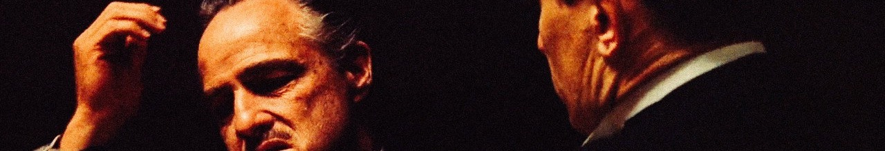
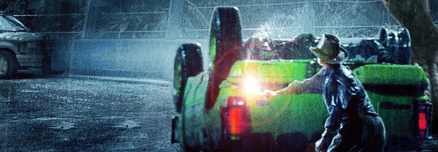

Что такое Голливуд
Голливуд — район Лос-Анджелеса в Калифорнии, ставший синонимом американской киноиндустрии. Первые студии появились здесь в 1910-х годах: мягкий климат, солнечная погода и разнообразные пейзажи рядом позволяли снимать почти круглый год.
Знаменитая надпись на холме Гриффит-парка первоначально читалась как «Hollywoodland» и была рекламой жилого квартала. Этот сайт — небольшой справочник по голливудским фильмам.
Подробнее

Тёмный рыцарь (2008)
Вторая часть трилогии Нолана о Бэтмене. Бэтмен, комиссар Гордон и прокурор Харви Дент пытаются очистить Готэм от организованной преступности, но на их пути встаёт Джокер — хаос, который невозможно купить или запугать.
Роль Джокера принесла Хиту Леджеру посмертный «Оскар». Картина стала одной из первых крупных игровых лент, часть которой снята камерами IMAX.
Подробнее

Парк Юрского периода (1993)
По роману Майкла Крайтона: учёные оживляют динозавров с помощью ДНК из древнего янтаря и открывают парк развлечений, где система безопасности даёт сбой.
Фильм соединил механических динозавров студии Стэна Уинстона и компьютерную графику Industrial Light & Magic.
Подробнее